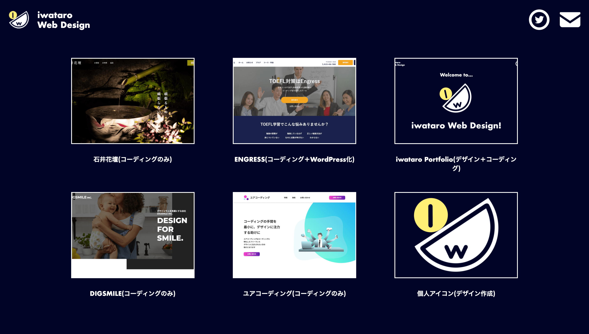
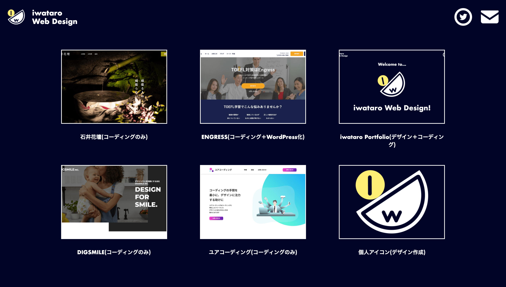

iwataro Portfolio

 

● デザイン作成、コーディング
● 使用言語：HTML,CSS,Javascript,jQuery
● ページ数：８枚
AdobeXDでデザイン作成し、コーディング致しました。
トップページより、ファーストビューとしてサイトロゴを配置し、animationプロパティで動きをつけました。実績のセクションではSwiper.jsにてサムネイルを表示しています。serviceセクションでは、レスポンシブ表示の際横スクロールであることが気付けるようにスクロールヒントを配置しました。また、背景画像を一部固定化しており、最後のセクションでは暗いフィルターをCSSで表示しました。
トップページ、下層ページ共にAOS.jsにてコンテンツがスクロールをトリガーにしてアニメーションされるようにしました。